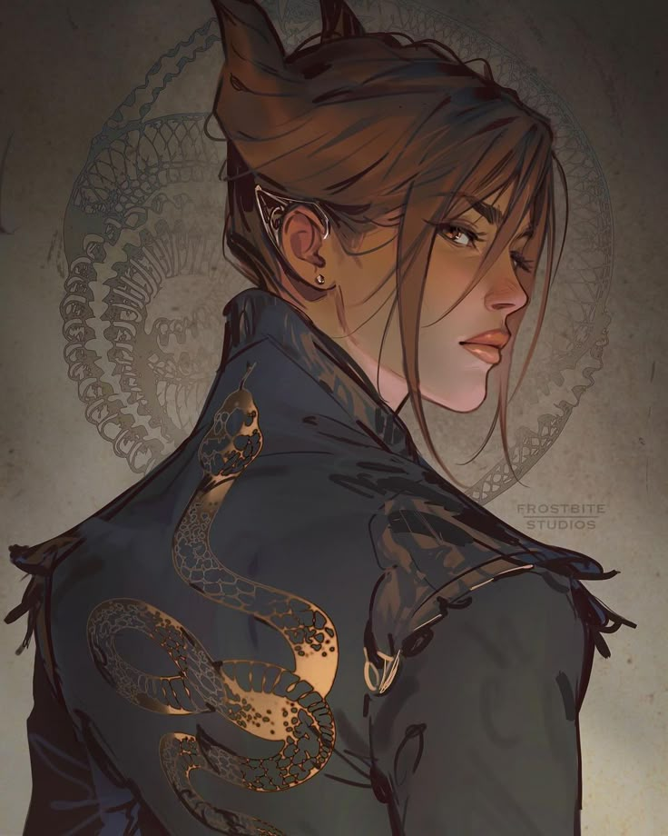

Creative Spot
Reseña Saga: "Los Habitantes del Aire"
Por Holly Black

Si buscas una historia de hadas donde no todo es polvo de estrellas y deseos concedidos, la saga de Los Habitantes del Aire es para ti. Holly Black nos transporta a un mundo donde las criaturas mágicas son crueles, caprichosas y peligrosas.
La historia sigue a Jude Duarte, una humana que, tras el asesinato de sus padres, es llevada a vivir a la Corte Suprema de Elfhame. En un lugar donde todos la desprecian por su mortalidad, Jude decide que no será una víctima, sino una jugadora en el tablero político de Faerie.
"Si no puedo ser mejor que ellos, me convertiré en algo mucho peor." — Jude Duarte.
"La mayoría de la gente quiere cosas increíbles. Yo solo quiero ser increíble."
Lo que más me atrapó de esta trilogía no fue solo la magia, sino la tensión entre Jude y el Príncipe Cardan. Es uno de los mejores enemies-to-lovers que he leído, porque ambos son personajes complejos, grises y ambiciosos que luchan por el poder mientras intentan descifrar sus propios sentimientos.

El Personaje: Jude Duarte
Jude es una de mis protagonistas favoritas porque rompe con el molde de la "heroína perfecta". Es ambiciosa, a veces despiadada y está dispuesta a todo para proteger a su familia y ganarse un lugar en un mundo que intenta destruirla. Su evolución de una niña asustada a una reina estratégica es simplemente magistral.